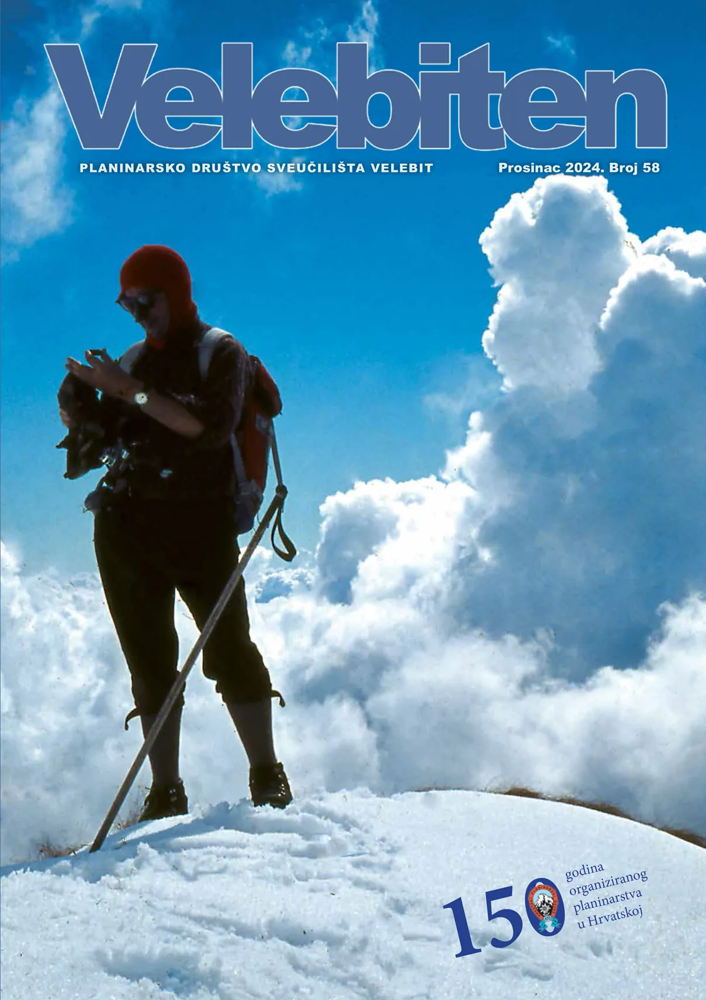

Velebiten br. 58
Uskoro izlazi novi broj Velebitena, a što u njemu ima, između ostalog, pročitajte u osvrtu našeg urednika Ivora Jankovića

Drage Velebitašice, dragi Velebitaši, drage Velebitange sve,
Naslovnica Velebitena 58: Željko Poljak među oblacima (1971. na bezimenom vrhu u masivu Annapurne)
Zima nam je stigla, pa po starom dobrom običaju, stiže i zimsko štivo – novi broj dragog nam Velebitena. Kao i prošli, i ovaj broj donosi pregled mnogih raznovrsnih aktivnosti koje provodimo kroz naše različite odsjeke. Naravno, ne treba zaboraviti niti privatne pothvate koji su od zanimanja za sve nas – prvenstveno daleke putopise naših članova – i koji nas slikom i riječju vode bespućima dragog nam planeta. A ove godine bili smo itekako aktivni. Prvo, i vjerujem svima nama najvažnije, uspješno su provedene školice našeg speleološkog, alpinističkog i planinarskog odsjeka. Uz pomoć instruktora, vođe školica svojim nesebičnim radom, trudom i znanjem osigurali su nove članove našeg društva. Neki od voditelja (valjda ostavši bez riječi, ili glasa koji su možda potrošili na svoje školarce!?) dio izvješća o izletima i dogodovštinama s istih mudro su prepustili polaznicama i polaznicima školica – što tekstove čini još raznovrsnijim i zanimljivijim te naše nove članove još čvršće veže uz Velebit! Vrijedan je to dokument, koji, osim za službene anale našeg društva, može poslužiti kao podsjetnik koliko smo neiskusni i naivni bili u tim našim prvim koracima planinskim vrhovima ili dubinama podzemlja. Iz pročitanog mogu samo sretno zaključiti da je naš Velebitaški Duh uspješno prožeo sve izlete i ušao u novu generaciju.
Osim školica, kao ključnih elemenata našeg djelovanja, nikako ne smijemo zaboraviti niti ostale uspjehe, poput već tradicionalne speleološke ekspedicije na sjeverni Velebit koja je i ove godine donijela nove vrijedne spoznaje. No nova otkrića, a posebno nova iskustva i nove doživljaje, moguće je iskusiti i u nekim starim, poznatim objektima (poput Rašpora i Munižabe). Posebno me veseli da u posljednje vrijeme jača suradnja raznih speleoloških društava i udruga i tako zajedničkim istraživanjima izleti postaju kvalitetniji, zanimljiviji i svakako još zabavniji. A ponekad se, duboko ispod zemlje, javlja i neka nova (međudruštvena?) ljubav.
Osim u domovini, naši špiljari (ne samo Velebitaši) sudjelovali su i u međunarodnim znanstvenim uspjesima i istraživanjima. Hrvatsko-slovensko-rumunjski tim (plus peseki) stjecali su nove znanstvene spoznaje i doživljavali mnoge zabavne momente u ledenom okružju podzemlja Rumunjske. Tko zna, možda nam se sprema i neka nova sekcija Velebita – špiljarsko-sklizačka? Od Tee me ništa čudilo ne bi – pročitajte samo čemu je sve podvrgla vlastitu sestru tijekom nekoliko ferata! Nakon toga, logičan korak bio bi i povesti ju u svijet podzemlja, zar ne?
Važan dio Velebitena svakako je i onaj u kojem se naši dugogodišnji članovi prisjećaju važnih uspjeha iz prošlosti. S osobitim veseljem i interesom pročitao sam Maliganov tekst o istraživanjima špilje Veternice. Usput, nedavno izašao broj časopisa Speleolog bratskog nam društva Željezničar bio je posvećen upravo ovom važnom speleološkom objektu, ključnom za razvoj hrvatske, a posebno zagrebačke speleologije i jednoj od najvažnijih špilja na ovom prostoru. Veternica krije još mnoge tajne i nadamo se da će i novije generacije speleologa imati prilike proći njenim kilometrima i uživati u ljepotama njenog podzemlja. Nadalje, u crticama iz prošlosti u ovom broju saznajemo nešto i o opasnostima, dogodovštinama i uspjesima ekspedicije na Kavkaz.
Visokogorci i planinari također su vrludali planinskim bespućima, ostvarili mnoge vrijedne uspjehe i, što je vjerojatno i najvažnije, pomakli osobne granice. Hodalo se vrhovima, slavilo u susjednim državama, pješačilo dugim stazama Dolomita i Camina, umarajući noge i tijelo, a odmarajući dušu. Feratalo se na sve strane (da li to njušimo početak novog ciklusa „Velebitaši idu na ferate“?).
Nedavno ponovo oživljena i osvježena markacistička sekcija također je bila vrlo vrijedna i aktivna u održavanju povjerenih nam staza Samarskih stijena, na posebno veselje mnogih zaljubljenika u prirodu. Također, obratite pažnju na skorašnji tečaj markacije i pridružite se toj hvalevrijednoj tradiciji.
Na kraju, nezaustavljiv tok vremena sobom nosi i tužne, iako neminovne, događaje. Polako nas napuštaju prijatelji koji su zauvijek označili djelovanje našeg, kao i drugih bratskih nam društava i koji svu velik dio svog života posvetili djelatnostima koje nas sve vesele. U ovom broju u kratkim crtama prisjećamo se doajena hrvatskog planinarstva prof. Željka Poljaka, kao i prof. Tefka Saračevića – čovjeka koji je neizbrisiv trag ostavio upravo unutar našeg društva, PDS Velebit. Nešto drugačiji, vrlo osoban in memoriam iz pera našeg Marjana Prpića – Luke podsjeća nas na važnu ulogu nedavno – i prerano – preminulog doajena speleoronjenja, Tihomira Kovačevića – Tihog.
No nije sve tako crno (osim kad vam se zagase lampe duboko u tami podzemlja, tada je uistinu vrlo crno). Osobno smatram da su sjećanja na one koji su prije nas kročili velebitaškim stazama nov poticaj da i mi stanemo na ramena tih velikana i time damo svoj obol u različitim djelatnostima koje naš Velebit provodi.
Svima nam želim ugodno čitanje!
Vaš urednik